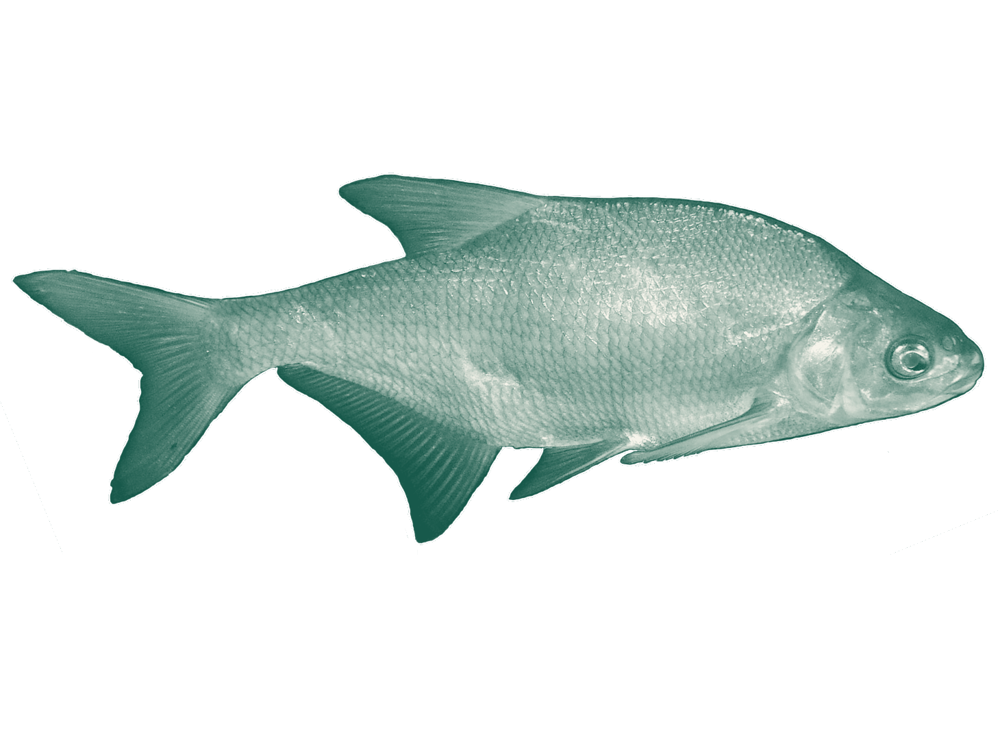
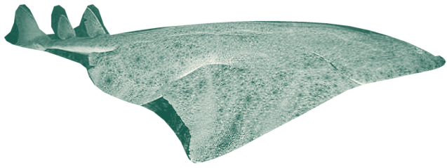
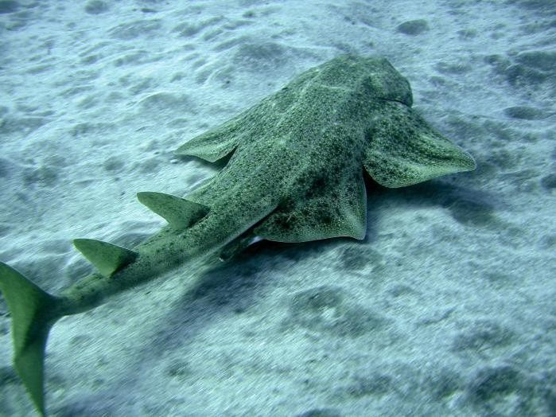
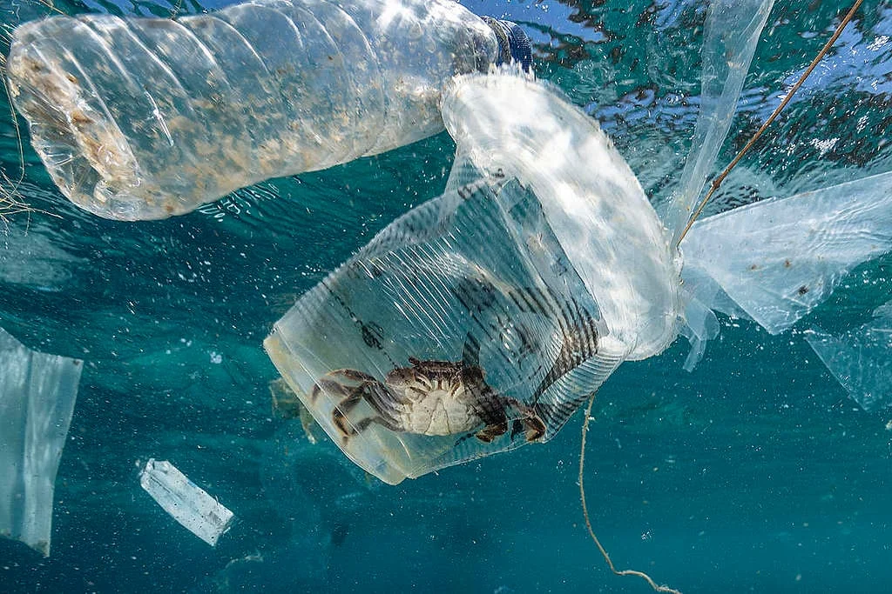
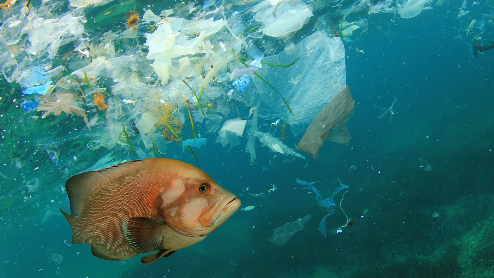

Ósseos
Esqueleto de osso.
Em geral têm bexiga natatória. Sardinha, tilápia, atum.
Exposição interativa · Ecossistemas marinhos
Tubarões, raias e o tubarão-anjo: conheça suas adaptações, explore o modelo 3D e descubra por que conservar essas espécies importa.

Conheça os peixes
Espécies catalogadas na FishBase até junho de 2026; dos rios mais rasos às profundezas oceânicas.

Esqueleto de osso.
Em geral têm bexiga natatória. Sardinha, tilápia, atum.

Esqueleto de cartilagem.
Fendas branquiais visíveis. Tubarões, raias, quimeras.
Uma comparação rápida

Tubarões e cação
O mesmo animal, outro nome no mercado.
Peixes cartilaginosos do grupo dos elasmobrânquios.
Nome comercial da carne de tubarão, vendida sem indicar a espécie.
Permite monitorar a pesca e evitar espécies ameaçadas.
Perfil científico
Corpo achatado como o de uma raia, mas com fendas branquiais nas laterais.


Espécie do modelo 3D: Squatina dumeril, o tubarão-anjo-do-Atlântico.
Profundidade comum
40–250 mfundos de areia e lodo
Filhotes por ninhada
4–25vivíparo aplacentário
Estratégia de caça
Emboscadacamuflado no fundo marinho
Grupo
Chondrichthyes · Squatiniformes
Como reconhecer
Peitorais largas, olhos no topo e fendas branquiais laterais
Cardápio
Peixes, crustáceos e moluscos
Risco
Captura incidental em redes e arrastos
Conservação
Squatina dumeril — Pouco Preocupante na avaliação IUCN de 2017; a captura incidental ainda merece atenção.
Maquete virtual
Arraste para girar. Pince ou use a roda do mouse para aproximar.
Atlantic Angel Shark · Squatina dumeril por MTSUichthyology no Sketchfab. Requer internet.
Conservação
Pequenas escolhas mudam o destino de espécies inteiras.


A pressão
A proteção
A escolha
Da observação à atitude: informação também protege o oceano.
Investigação do tubarão-anjo
Leia as pistas, identifique a espécie e escolha como ajudar a proteger o oceano.
Fontes e créditos